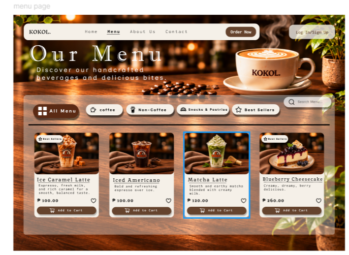

SYSTEM PREVIEW / KOKOL
WEB APPLICATION · CAPSTONE
KOKOL Coffee
Automated Inventory and Sales System designed to improve stock monitoring, sales recording, and daily operations for a coffee shop.
Explore project visuals ↗AVAILABLE FOR INTERNSHIP / OJT
Hi, I'm Archie Lumosad — an IT student interested in software quality, web development, and thoughtful digital experiences.

01 / ABOUT
I'm a Bachelor of Science in Information Technology student who enjoys building practical systems, exploring UI/UX design, and learning how to make software work better for people.
I'm currently looking for an internship opportunity where I can learn from a team, sharpen my technical skills, and contribute with curiosity and attention to detail.
02 / TOOLKIT
Things I've worked with and continue to learn.
03 / SELECTED WORK
A closer look at the things I've designed and built.
WEB APPLICATION · CAPSTONE
Automated Inventory and Sales System designed to improve stock monitoring, sales recording, and daily operations for a coffee shop.
Explore project visuals ↗04 / UI & UX
Interface concepts and visual explorations for the KOKOL Coffee experience.




05 / GET IN TOUCH
I'm open to internship opportunities, collaboration, and learning experiences. Let's connect.
archielumosad2@gmail.com ↗